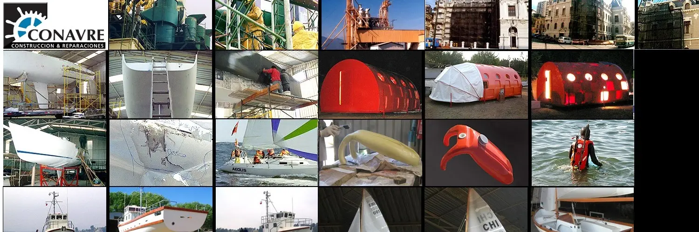

Servicios Especializados en Fibra de Vidrio y Construcción Naval
Soluciones navales de alta calidad en construcción, reparación y estructuras en fibra de vidrio.
¿Qué servicios ofrecemos?
Construcción de Embarcaciones
Fabricación de embarcaciones en fibra de vidrio de alta resistencia, personalizadas según cada necesidad.
Reparaciones Navales
Restauración estructural, laminados, refuerzos y recuperación de embarcaciones dañadas o antiguas.
Motorización e Instalaciones
Instalación de motores internos y externos, sistemas de propulsión y adaptaciones mecánicas especializadas.
Aplicación de Pintura Marina
Esquemas de pintura de alta durabilidad contra corrosión, abrasión marina y condiciones extremas.
Estructuras Especiales
Fabricación de refugios glaciares, módulos habitacionales, campers y soluciones industriales en fibra de vidrio.
Modificaciones y Alteraciones
Ampliaciones, adaptaciones o conversiones en embarcaciones existentes para nuevos usos o regulaciones.
¿Por qué elegir CONAVRE?
 Calidad naval certificada bajo estándares DGTM.
Calidad naval certificada bajo estándares DGTM. Años de experiencia en construcción y reparación de embarcaciones.
Años de experiencia en construcción y reparación de embarcaciones. Innovación en soluciones en fibra de vidrio y estructuras especiales.
Innovación en soluciones en fibra de vidrio y estructuras especiales. Compromiso absoluto con la calidad, los plazos y la satisfacción del cliente.
Compromiso absoluto con la calidad, los plazos y la satisfacción del cliente. Asesoría personalizada y soporte técnico en cada etapa del proyecto.
Asesoría personalizada y soporte técnico en cada etapa del proyecto.
Confía en CONAVRE para transformar tus ideas en soluciones marítimas seguras, duraderas y de calidad internacional.
¿Quieres conocer nuestros trabajos?
Explora proyectos ya realizados en fibra de vidrio para diferentes usos.
🔎 Ver Proyectos Realizados¿Listo para iniciar tu proyecto?
Con CONAVRE, tu proyecto está en manos de expertos. ¡Contáctanos!
📩 Solicitar Cotización